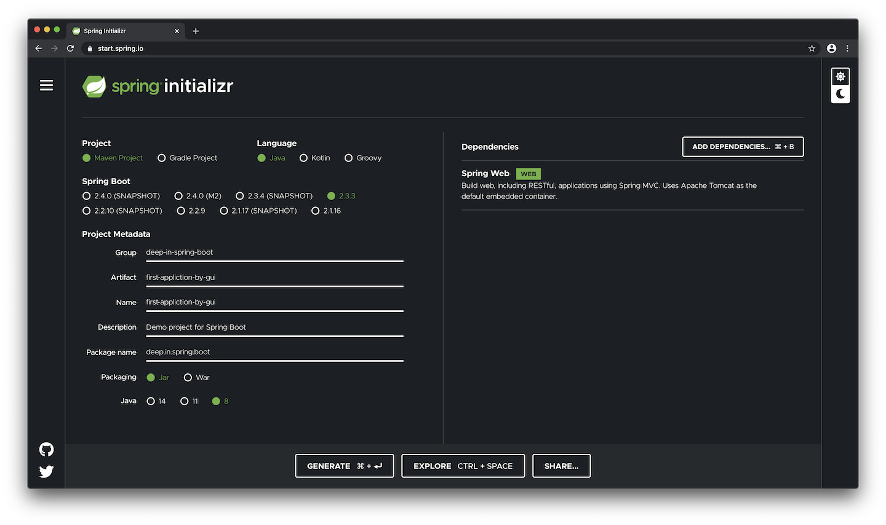
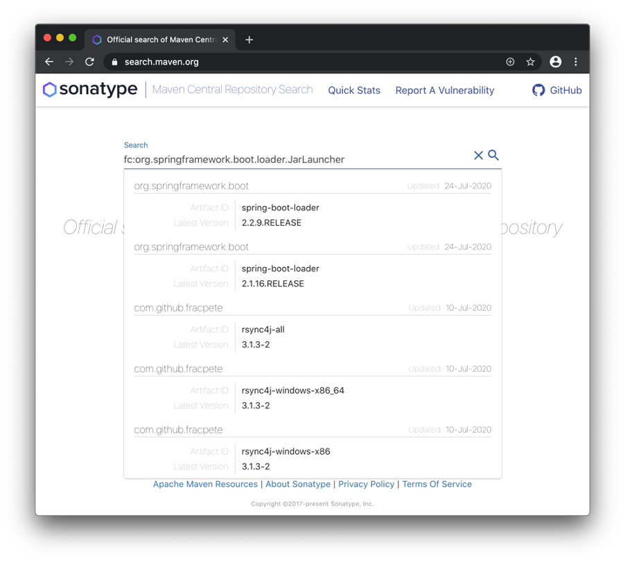
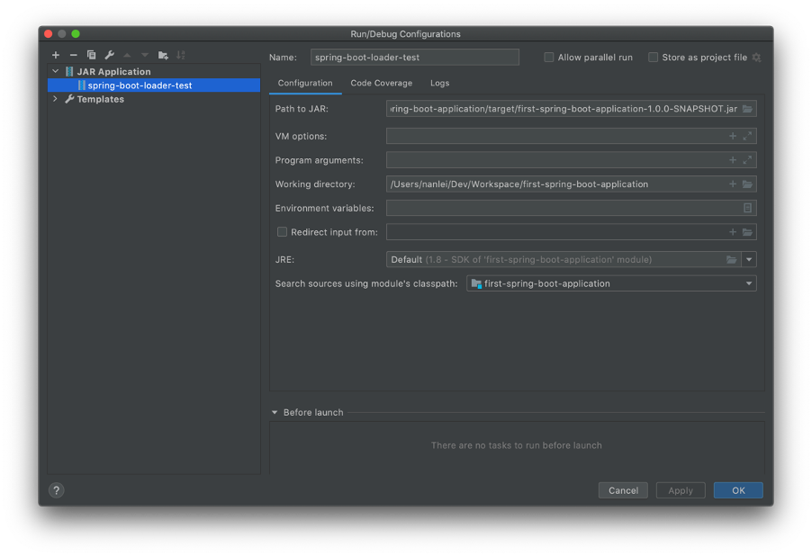
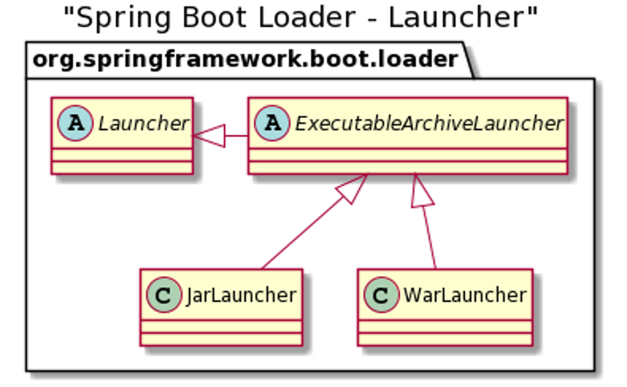

Standalone Application
01 - Spring Boot 应用程序
1. 使用Maven命令行构建项目¶
$ mvn archetype:generate -DgroupId=deep-in-spring-boot -DartifactId=first-spring-boot-application -Dversion=1.0.0-SNAPSHOT -DinteractiveMode=false -Dpackage=deep.in.spring.boot
[INFO] Scanning for projects...
([INFO]
[INFO] ------------------< org.apache.maven:standalone-pom >-------------------
[INFO] Building Maven Stub Project (No POM) 1
[INFO] --------------------------------[ pom ]---------------------------------
[INFO]
[INFO] >>> maven-archetype-plugin:3.2.0:generate (default-cli) > generate-sources @ standalone-pom >>>
[INFO]
[INFO] <<< maven-archetype-plugin:3.2.0:generate (default-cli) < generate-sources @ standalone-pom <<<
[INFO]
[INFO] )
[INFO] --- maven-archetype-plugin:3.2.0:generate (default-cli) @ standalone-pom ---
[INFO] Generating project in Batch mode
[WARNING] No archetype found in remote catalog. Defaulting to internal catalog
[INFO] No archetype defined. Using maven-archetype-quickstart (org.apache.maven.archetypes:maven-archetype-quickstart:1.0)
[INFO] ----------------------------------------------------------------------------
[INFO] Using following parameters for creating project from Old (1.x) Archetype: maven-archetype-quickstart:1.0
[INFO] ----------------------------------------------------------------------------
[INFO] Parameter: basedir, Value: /Users/nanlei/Dev/Workspace
[INFO] Parameter: package, Value: deep.in.spring.boot
[INFO] Parameter: groupId, Value: deep-in-spring-boot
[INFO] Parameter: artifactId, Value: first-spring-boot-application
[INFO] Parameter: packageName, Value: deep.in.spring.boot
[INFO] Parameter: version, Value: 1.0.0-SNAPSHOT
[INFO] project created from Old (1.x) Archetype in dir: /Users/nanlei/Dev/Workspace/first-spring-boot-application
[INFO] ------------------------------------------------------------------------
[INFO] BUILD SUCCESS
[INFO] ------------------------------------------------------------------------
[INFO] Total time: 1.475 s
[INFO] Finished at: 2020-08-01T23:51:37+08:00
archetype是Maven插件maven-archetype-plugin的简称
插件目标：archetype:generate
插件参数：GAV信息groupId，artifactId，version和包名package
交互式参数：interactiveMode为false，使用静默方式
查看项目结构：
$ cd first-spring-boot-application/
$ ls -ls
total 8
8 -rw-r--r-- 1 nanlei staff 692 Aug 1 23:51 pom.xml
0 drwxr-xr-x 4 nanlei staff 128 Aug 1 23:51 src
安装tree组件并再次查看：
$ brew install tree
==> Downloading https://mirrors.aliyun.com/homebrew/homebrew-bottles/bottles/tree-1.8.0.catalina.bottle.tar.
######################################################################## 100.0%
==> Pouring tree-1.8.0.catalina.bottle.tar.gz
🍺 /usr/local/Cellar/tree/1.8.0: 8 files, 121.1KB
$ tree
.
├── pom.xml
└── src
├── main
│ └── java
│ └── deep
│ └── in
│ └── spring
│ └── boot
│ └── App.java
└── test
└── java
└── deep
└── in
└── spring
└── boot
└── AppTest.java
13 directories, 3 files
App.java是引导类，AppTest.java是单元测试类
在pom.xml中，archetype插件添加了junit的依赖
在pom.xml中添加Spring Boot的web依赖：
<dependency>
<groupId>org.springframework.boot</groupId>
<artifactId>spring-boot-starter-web</artifactId>
<version>2.3.1.RELEASE</version>
</dependency>
查看项目dependency树的变化：
$ mvn dependency:tree -Dincludes=org.springframework*
[INFO] Scanning for projects...
[INFO]
[INFO] ---------< deep-in-spring-boot:first-spring-boot-application >----------
[INFO] Building first-spring-boot-application 1.0.0-SNAPSHOT
[INFO] --------------------------------[ jar ]---------------------------------
[INFO]
[INFO] --- maven-dependency-plugin:2.8:tree (default-cli) @ first-spring-boot-application ---
[INFO] deep-in-spring-boot:first-spring-boot-application:jar:1.0.0-SNAPSHOT
[INFO] \- org.springframework.boot:spring-boot-starter-web:jar:2.3.1.RELEASE:compile
[INFO] +- org.springframework.boot:spring-boot-starter:jar:2.3.1.RELEASE:compile
[INFO] | +- org.springframework.boot:spring-boot:jar:2.3.1.RELEASE:compile
[INFO] | +- org.springframework.boot:spring-boot-autoconfigure:jar:2.3.1.RELEASE:compile
[INFO] | +- org.springframework.boot:spring-boot-starter-logging:jar:2.3.1.RELEASE:compile
[INFO] | \- org.springframework:spring-core:jar:5.2.7.RELEASE:compile
[INFO] | \- org.springframework:spring-jcl:jar:5.2.7.RELEASE:compile
[INFO] +- org.springframework.boot:spring-boot-starter-json:jar:2.3.1.RELEASE:compile
[INFO] +- org.springframework.boot:spring-boot-starter-tomcat:jar:2.3.1.RELEASE:compile
[INFO] +- org.springframework:spring-web:jar:5.2.7.RELEASE:compile
[INFO] | \- org.springframework:spring-beans:jar:5.2.7.RELEASE:compile
[INFO] \- org.springframework:spring-webmvc:jar:5.2.7.RELEASE:compile
[INFO] +- org.springframework:spring-aop:jar:5.2.7.RELEASE:compile
[INFO] +- org.springframework:spring-context:jar:5.2.7.RELEASE:compile
[INFO] \- org.springframework:spring-expression:jar:5.2.7.RELEASE:compile
[INFO] ------------------------------------------------------------------------
[INFO] BUILD SUCCESS
[INFO] ------------------------------------------------------------------------
[INFO] Total time: 0.802 s
[INFO] Finished at: 2020-08-02T00:45:55+08:00
[INFO] ------------------------------------------------------------------------
编写App.java代码：
@RestController
@SpringBootApplication
public class App {
@RequestMapping("/")
public String index() {
return "Welcome to Spring Boot!";
}
public static void main(String[] args) {
SpringApplication.run(App.class, args);
}
}
使用Maven插件方式mvn spring-boot:run运行项目：
$ mvn spring-boot:run
[INFO] Scanning for projects...
Downloading from aliyun-maven: http://maven.aliyun.com/nexus/content/groups/public/org/apache/maven/plugins/maven-metadata.xml
Downloading from aliyun-maven: http://maven.aliyun.com/nexus/content/groups/public/org/codehaus/mojo/maven-metadata.xml
Downloaded from aliyun-maven: http://maven.aliyun.com/nexus/content/groups/public/org/apache/maven/plugins/maven-metadata.xml (9.9 kB at 4.4 kB/s)
Downloaded from aliyun-maven: http://maven.aliyun.com/nexus/content/groups/public/org/codehaus/mojo/maven-metadata.xml (21 kB at 8.7 kB/s)
[INFO] ------------------------------------------------------------------------
[INFO] BUILD FAILURE
[INFO] ------------------------------------------------------------------------
[INFO] Total time: 2.835 s
[INFO] Finished at: 2020-08-02T01:00:07+08:00
[INFO] ------------------------------------------------------------------------
[ERROR] No plugin found for prefix 'spring-boot' in the current project and in the plugin groups [org.apache.maven.plugins, org.codehaus.mojo] available from the repositories [local (/Users/nanlei/.m2/repository), aliyun-maven (http://maven.aliyun.com/nexus/content/groups/public/)] -> [Help 1]
[ERROR]
[ERROR] To see the full stack trace of the errors, re-run Maven with the -e switch.
[ERROR] Re-run Maven using the -X switch to enable full debug logging.
[ERROR]
[ERROR] For more information about the errors and possible solutions, please read the following articles:
[ERROR] [Help 1] http://cwiki.apache.org/confluence/display/MAVEN/NoPluginFoundForPrefixException
查看官方文档
https://docs.spring.io/spring-boot/docs/current/reference
有如下内容：
2.4.4. Running the Example
At this point, your application should work. Since you used thespring-boot-starter-parentPOM, you have a useful run goal that you can use to start the application. Typemvn spring-boot:runfrom the root project directory to start the application.
在pom.xml中添加spring-boot-starter-parent：
<parent>
<groupId>org.springframework.boot</groupId>
<artifactId>spring-boot-starter-parent</artifactId>
<version>2.3.1.RELEASE</version>
</parent>
再次运行：
$ mvn spring-boot:run
[INFO] Scanning for projects...
[INFO]
[INFO] ---------< deep-in-spring-boot:first-spring-boot-application >----------
[INFO] Building first-spring-boot-application 1.0.0-SNAPSHOT
[INFO] --------------------------------[ jar ]---------------------------------
[INFO]
[INFO] >>> spring-boot-maven-plugin:2.3.1.RELEASE:run (default-cli) > test-compile @ first-spring-boot-application >>>
[INFO]
[INFO] --- maven-resources-plugin:3.1.0:resources (default-resources) @ first-spring-boot-application ---
[INFO] Using 'UTF-8' encoding to copy filtered resources.
[INFO] skip non existing resourceDirectory /Users/nanlei/Dev/Workspace/first-spring-boot-application/src/main/resources
[INFO] skip non existing resourceDirectory /Users/nanlei/Dev/Workspace/first-spring-boot-application/src/main/resources
[INFO]
[INFO] --- maven-compiler-plugin:3.8.1:compile (default-compile) @ first-spring-boot-application ---
[INFO] Nothing to compile - all classes are up to date
[INFO]
[INFO] --- maven-resources-plugin:3.1.0:testResources (default-testResources) @ first-spring-boot-application ---
[INFO] Using 'UTF-8' encoding to copy filtered resources.
[INFO] skip non existing resourceDirectory /Users/nanlei/Dev/Workspace/first-spring-boot-application/src/test/resources
[INFO]
[INFO] --- maven-compiler-plugin:3.8.1:testCompile (default-testCompile) @ first-spring-boot-application ---
[INFO] Nothing to compile - all classes are up to date
[INFO]
[INFO] <<< spring-boot-maven-plugin:2.3.1.RELEASE:run (default-cli) < test-compile @ first-spring-boot-application <<<
[INFO]
[INFO]
[INFO] --- spring-boot-maven-plugin:2.3.1.RELEASE:run (default-cli) @ first-spring-boot-application ---
[INFO] Attaching agents: []
. ____ _ __ _ _
/\\ / ___'_ __ _ _(_)_ __ __ _ \ \ \ \
( ( )\___ | '_ | '_| | '_ \/ _` | \ \ \ \
\\/ ___)| |_)| | | | | || (_| | ) ) ) )
' |____| .__|_| |_|_| |_\__, | / / / /
=========|_|==============|___/=/_/_/_/
:: Spring Boot :: (v2.3.1.RELEASE)
2020-08-02 01:13:46.642 INFO 6736 --- [ main] deep.in.spring.boot.App : Starting App on nanleis-MacBook-Pro.local with PID 6736 (/Users/nanlei/Dev/Workspace/first-spring-boot-application/target/classes started by nanlei in /Users/nanlei/Dev/Workspace/first-spring-boot-application)
2020-08-02 01:13:46.644 INFO 6736 --- [ main] deep.in.spring.boot.App : No active profile set, falling back to default profiles: default
2020-08-02 01:13:47.141 INFO 6736 --- [ main] o.s.b.w.embedded.tomcat.TomcatWebServer : Tomcat initialized with port(s): 8080 (http)
2020-08-02 01:13:47.147 INFO 6736 --- [ main] o.apache.catalina.core.StandardService : Starting service [Tomcat]
2020-08-02 01:13:47.148 INFO 6736 --- [ main] org.apache.catalina.core.StandardEngine : Starting Servlet engine: [Apache Tomcat/9.0.36]
2020-08-02 01:13:47.181 INFO 6736 --- [ main] o.a.c.c.C.[Tomcat].[localhost].[/] : Initializing Spring embedded WebApplicationContext
2020-08-02 01:13:47.181 INFO 6736 --- [ main] w.s.c.ServletWebServerApplicationContext : Root WebApplicationContext: initialization completed in 507 ms
2020-08-02 01:13:47.268 INFO 6736 --- [ main] o.s.s.concurrent.ThreadPoolTaskExecutor : Initializing ExecutorService 'applicationTaskExecutor'
2020-08-02 01:13:47.352 INFO 6736 --- [ main] o.s.b.w.embedded.tomcat.TomcatWebServer : Tomcat started on port(s): 8080 (http) with context path ''
2020-08-02 01:13:47.359 INFO 6736 --- [ main] deep.in.spring.boot.App : Started App in 0.917 seconds (JVM running for 1.155)
检查HTTP服务和所写代码：
$ curl http://127.0.0.1:8080/
Welcome to Spring Boot
2. 图形化构建Spring Boot应用¶

拷贝生成好的zip包到项目目录：
$ cp ~/Downloads/first-application-by-gui.zip .
解压缩该文件：
$ unzip first-application-by-gui.zip
Archive: first-application-by-gui.zip
creating: first-application-by-gui/
creating: first-application-by-gui/.mvn/
creating: first-application-by-gui/.mvn/wrapper/
inflating: first-application-by-gui/.mvn/wrapper/maven-wrapper.properties
inflating: first-application-by-gui/.mvn/wrapper/MavenWrapperDownloader.java
inflating: first-application-by-gui/.mvn/wrapper/maven-wrapper.jar
inflating: first-application-by-gui/mvnw
inflating: first-application-by-gui/.gitignore
inflating: first-application-by-gui/HELP.md
inflating: first-application-by-gui/mvnw.cmd
creating: first-application-by-gui/src/
creating: first-application-by-gui/src/main/
creating: first-application-by-gui/src/main/resources/
creating: first-application-by-gui/src/main/resources/templates/
inflating: first-application-by-gui/src/main/resources/application.properties
creating: first-application-by-gui/src/main/resources/static/
creating: first-application-by-gui/src/main/java/
creating: first-application-by-gui/src/main/java/deep/
creating: first-application-by-gui/src/main/java/deep/in/
creating: first-application-by-gui/src/main/java/deep/in/spring/
creating: first-application-by-gui/src/main/java/deep/in/spring/boot/
inflating: first-application-by-gui/src/main/java/deep/in/spring/boot/FirstApplicationByGuiApplication.java
creating: first-application-by-gui/src/test/
creating: first-application-by-gui/src/test/java/
creating: first-application-by-gui/src/test/java/deep/
creating: first-application-by-gui/src/test/java/deep/in/
creating: first-application-by-gui/src/test/java/deep/in/spring/
creating: first-application-by-gui/src/test/java/deep/in/spring/boot/
inflating: first-application-by-gui/src/test/java/deep/in/spring/boot/FirstApplicationByGuiApplicationTests.java
inflating: first-application-by-gui/pom.xml
使用tree命令查看：
$ tree -a first-application-by-gui
first-application-by-gui
├── .gitignore
├── .mvn
│ └── wrapper
│ ├── MavenWrapperDownloader.java
│ ├── maven-wrapper.jar
│ └── maven-wrapper.properties
├── HELP.md
├── mvnw
├── mvnw.cmd
├── pom.xml
└── src
├── main
│ ├── java
│ │ └── deep
│ │ └── in
│ │ └── spring
│ │ └── boot
│ │ └── FirstApplicationByGuiApplication.java
│ └── resources
│ ├── application.properties
│ ├── static
│ └── templates
└── test
└── java
└── deep
└── in
└── spring
└── boot
└── FirstApplicationByGuiApplicationTests.java
18 directories, 11 files
.gitignore 文件定义了常见的文件或目录的版本控制忽略名单，比如：
HELP.md
target/
!.mvn/wrapper/maven-wrapper.jar
!**/src/main/**/target/
!**/src/test/**/target/
### STS ###
.apt_generated
.classpath
.factorypath
.project
.settings
.springBeans
.sts4-cache
### IntelliJ IDEA ###
.idea
*.iws
*.iml
*.ipr
### NetBeans ###
/nbproject/private/
/nbbuild/
/dist/
/nbdist/
/.nb-gradle/
build/
!**/src/main/**/build/
!**/src/test/**/build/
### VS Code ###
.vscode/
Maven Wrapper文件包含.mvn目录、mvnw和mvnw.cmd文件，
参考：https://github.com/takari/maven-wrapper
可以不安装Maven而直接使用，比如：
Normally you instruct users to install a specific version of Apache Maven, put it on the PATH and then run the mvn command like the following:
But now, with a Maven Wrapper setup, you can instruct users to run wrapper scripts:mvn clean install
./mvnw clean install
application.properties文件 是Spring Boot默认的应用外部配置文件，其配置属性可以影响应用程序的行为。
FirstApplicationByGuiApplicationTests.java文件 是Spring Boot单元测试的模版JUnit文件，其路径和对应的引导文件FirstApplicationByGuiApplication.java对应。
启动项目并访问：
$ curl http://127.0.0.1:8080/
{"timestamp":"2020-08-02T08:57:15.817+00:00","status":404,"error":"Not Found","message":"","path":"/"}
因项目没有编写默认服务而报404错误
安装jsonpp查看JSON响应：
$ brew install jsonpp
==> Downloading https://mirrors.aliyun.com/homebrew/homebrew-bottles/bottles/jsonpp-1.3.0_1.catalina.bottle.tar.gz
######################################################################## 100.0%
==> Pouring jsonpp-1.3.0_1.catalina.bottle.tar.gz
🍺 /usr/local/Cellar/jsonpp/1.3.0_1: 5 files, 2.4MB
再次访问：
$ curl http://127.0.0.1:8080 | jsonpp
% Total % Received % Xferd Average Speed Time Time Time Current
Dload Upload Total Spent Left Speed
100 102 0 102 0 0 20400 0 --:--:-- --:--:-- --:--:-- 20400
{
"timestamp": "2020-08-02T09:03:24.359+00:00",
"status": 404,
"error": "Not Found",
"message": "",
"path": "/"
}
3. 创建Spring Boot应用程序的可执行JAR¶
2.4.5. Creating an Executable Jar
We finish our example by creating a completely self-contained executable jar file that we could run in production. Executable jars (sometimes called “fat jars”) are archives containing your compiled classes along with all of the jar dependencies that your code needs to run.
可执行的JAR又称为“fat jars”
To create an executable jar, we need to add the
spring-boot-maven-pluginto ourpom.xml. To do so, insert the following lines just below thedependenciessection:
根据官方文档解释，添加如下内容到pom.xml中：
<build>
<plugins>
<plugin>
<groupId>org.springframework.boot</groupId>
<artifactId>spring-boot-maven-plugin</artifactId>
</plugin>
</plugins>
</build>
然后执行mvn package命令：
$ mvn package
[INFO] Scanning for projects...
[INFO]
[INFO] ------------< deep-in-spring-boot:first-application-by-gui >------------
[INFO] Building first-application-by-gui 0.0.1-SNAPSHOT
[INFO] --------------------------------[ jar ]---------------------------------
(省略部分内容...)
[INFO] -------------------------------------------------------
[INFO] T E S T S
[INFO] -------------------------------------------------------
(省略部分内容...)
. ____ _ __ _ _
/\\ / ___'_ __ _ _(_)_ __ __ _ \ \ \ \
( ( )\___ | '_ | '_| | '_ \/ _` | \ \ \ \
\\/ ___)| |_)| | | | | || (_| | ) ) ) )
' |____| .__|_| |_|_| |_\__, | / / / /
=========|_|==============|___/=/_/_/_/
:: Spring Boot :: (v2.3.2.RELEASE)
2020-08-02 17:15:06.025 INFO 4060 --- [ main] .b.FirstApplicationByGuiApplicationTests : Starting FirstApplicationByGuiApplicationTests on nanleis-MacBook-Pro.local with PID 4060 (started by nanlei in /Users/nanlei/Dev/Workspace/first-application-by-gui)
2020-08-02 17:15:06.026 INFO 4060 --- [ main] .b.FirstApplicationByGuiApplicationTests : No active profile set, falling back to default profiles: default
2020-08-02 17:15:06.709 INFO 4060 --- [ main] o.s.s.concurrent.ThreadPoolTaskExecutor : Initializing ExecutorService 'applicationTaskExecutor'
2020-08-02 17:15:06.958 INFO 4060 --- [ main] .b.FirstApplicationByGuiApplicationTests : Started FirstApplicationByGuiApplicationTests in 1.075 seconds (JVM running for 1.706)
[INFO] Tests run: 1, Failures: 0, Errors: 0, Skipped: 0, Time elapsed: 1.508 s - in deep.in.spring.boot.FirstApplicationByGuiApplicationTests
2020-08-02 17:15:07.127 INFO 4060 --- [extShutdownHook] o.s.s.concurrent.ThreadPoolTaskExecutor : Shutting down ExecutorService 'applicationTaskExecutor'
[INFO]
[INFO] Results:
[INFO]
[INFO] Tests run: 1, Failures: 0, Errors: 0, Skipped: 0
[INFO]
[INFO]
[INFO] --- maven-jar-plugin:3.2.0:jar (default-jar) @ first-application-by-gui ---
[INFO] Building jar: /Users/nanlei/Dev/Workspace/first-application-by-gui/target/first-application-by-gui-0.0.1-SNAPSHOT.jar
[INFO]
[INFO] --- spring-boot-maven-plugin:2.3.2.RELEASE:repackage (repackage) @ first-application-by-gui ---
[INFO] Replacing main artifact with repackaged archive
[INFO] ------------------------------------------------------------------------
[INFO] BUILD SUCCESS
[INFO] ------------------------------------------------------------------------
[INFO] Total time: 3.535 s
[INFO] Finished at: 2020-08-02T17:15:07+08:00
[INFO] ------------------------------------------------------------------------
最终生成的first-application-by-gui-0.0.1-SNAPSHOT.jar就在target目录下，使用java -jar命令运行JAR：
$ java -jar target/first-application-by-gui-0.0.1-SNAPSHOT.jar
. ____ _ __ _ _
/\\ / ___'_ __ _ _(_)_ __ __ _ \ \ \ \
( ( )\___ | '_ | '_| | '_ \/ _` | \ \ \ \
\\/ ___)| |_)| | | | | || (_| | ) ) ) )
' |____| .__|_| |_|_| |_\__, | / / / /
=========|_|==============|___/=/_/_/_/
:: Spring Boot :: (v2.3.2.RELEASE)
2020-08-02 17:24:33.034 INFO 4219 --- [ main] d.i.s.b.FirstApplicationByGuiApplication : Starting FirstApplicationByGuiApplication v0.0.1-SNAPSHOT on nanleis-MacBook-Pro.local with PID 4219 (/Users/nanlei/Dev/Workspace/first-application-by-gui/target/first-application-by-gui-0.0.1-SNAPSHOT.jar started by nanlei in /Users/nanlei/Dev/Workspace/first-application-by-gui)
2020-08-02 17:24:33.036 INFO 4219 --- [ main] d.i.s.b.FirstApplicationByGuiApplication : No active profile set, falling back to default profiles: default
2020-08-02 17:24:33.800 INFO 4219 --- [ main] o.s.b.w.embedded.tomcat.TomcatWebServer : Tomcat initialized with port(s): 8080 (http)
2020-08-02 17:24:33.809 INFO 4219 --- [ main] o.apache.catalina.core.StandardService : Starting service [Tomcat]
2020-08-02 17:24:33.810 INFO 4219 --- [ main] org.apache.catalina.core.StandardEngine : Starting Servlet engine: [Apache Tomcat/9.0.37]
2020-08-02 17:24:33.865 INFO 4219 --- [ main] o.a.c.c.C.[Tomcat].[localhost].[/] : Initializing Spring embedded WebApplicationContext
2020-08-02 17:24:33.865 INFO 4219 --- [ main] w.s.c.ServletWebServerApplicationContext : Root WebApplicationContext: initialization completed in 785 ms
2020-08-02 17:24:34.031 INFO 4219 --- [ main] o.s.s.concurrent.ThreadPoolTaskExecutor : Initializing ExecutorService 'applicationTaskExecutor'
2020-08-02 17:24:34.221 INFO 4219 --- [ main] o.s.b.w.embedded.tomcat.TomcatWebServer : Tomcat started on port(s): 8080 (http) with context path ''
2020-08-02 17:24:34.231 INFO 4219 --- [ main] d.i.s.b.FirstApplicationByGuiApplication : Started FirstApplicationByGuiApplication in 1.523 seconds (JVM running for 1.894)
java -jar方式和mvn spring-boot:run方式基本无异
4. Spring Boot可执行JAR资源结构¶
在target目录下执行tree -h
$ tree -h
.
├── [ 128] classes
│ ├── [ 1] application.properties
│ └── [ 96] deep
│ └── [ 96] in
│ └── [ 96] spring
│ └── [ 96] boot
│ └── [ 790] FirstApplicationByGuiApplication.class
├── [ 16M] first-application-by-gui-0.0.1-SNAPSHOT.jar
├── [3.0K] first-application-by-gui-0.0.1-SNAPSHOT.jar.original
├── [ 96] generated-sources
│ └── [ 64] annotations
├── [ 96] generated-test-sources
│ └── [ 64] test-annotations
├── [ 96] maven-archiver
│ └── [ 87] pom.properties
├── [ 96] maven-status
│ └── [ 128] maven-compiler-plugin
│ ├── [ 96] compile
│ │ └── [ 128] default-compile
│ │ ├── [ 59] createdFiles.lst
│ │ └── [ 125] inputFiles.lst
│ └── [ 96] testCompile
│ └── [ 128] default-testCompile
│ ├── [ 64] createdFiles.lst
│ └── [ 130] inputFiles.lst
├── [ 128] surefire-reports
│ ├── [ 18K] TEST-deep.in.spring.boot.FirstApplicationByGuiApplicationTests.xml
│ └── [ 363] deep.in.spring.boot.FirstApplicationByGuiApplicationTests.txt
└── [ 96] test-classes
└── [ 96] deep
└── [ 96] in
└── [ 96] spring
└── [ 96] boot
└── [ 588] FirstApplicationByGuiApplicationTests.class
22 directories, 12 files
first-application-by-gui-0.0.1-SNAPSHOT.jar.original是未包含第三方依赖的本地资源(编译后的classes目录下的资源)，所占空间仅3K，而可执行JAR的大小为16M。
解压缩first-application-by-gui-0.0.1-SNAPSHOT.jar到临时目录temp并查看：
$ unzip first-application-by-gui-0.0.1-SNAPSHOT.jar -d temp
Archive: first-application-by-gui-0.0.1-SNAPSHOT.jar
creating: temp/META-INF/
inflating: temp/META-INF/MANIFEST.MF
creating: temp/org/
creating: temp/org/springframework/
creating: temp/org/springframework/boot/
creating: temp/org/springframework/boot/loader/
(省略部分内容)
extracting: temp/BOOT-INF/lib/tomcat-embed-websocket-9.0.37.jar
extracting: temp/BOOT-INF/lib/spring-web-5.2.8.RELEASE.jar
extracting: temp/BOOT-INF/lib/spring-beans-5.2.8.RELEASE.jar
extracting: temp/BOOT-INF/lib/spring-webmvc-5.2.8.RELEASE.jar
extracting: temp/BOOT-INF/lib/spring-aop-5.2.8.RELEASE.jar
extracting: temp/BOOT-INF/lib/spring-context-5.2.8.RELEASE.jar
extracting: temp/BOOT-INF/lib/spring-expression-5.2.8.RELEASE.jar
extracting: temp/BOOT-INF/lib/slf4j-api-1.7.30.jar
extracting: temp/BOOT-INF/lib/spring-core-5.2.8.RELEASE.jar
extracting: temp/BOOT-INF/lib/spring-jcl-5.2.8.RELEASE.jar
inflating: temp/BOOT-INF/classpath.idx
查看temp目录的结构：
$ tree temp/
temp/
├── BOOT-INF
│ ├── classes
│ │ ├── application.properties
│ │ └── deep
│ │ └── in
│ │ └── spring
│ │ └── boot
│ │ └── FirstApplicationByGuiApplication.class
│ ├── classpath.idx
│ └── lib
│ ├── ...
│ ├── spring-aop-5.2.8.RELEASE.jar
│ ├── spring-beans-5.2.8.RELEASE.jar
│ ├── spring-boot-2.3.2.RELEASE.jar
│ ├── spring-boot-autoconfigure-2.3.2.RELEASE.jar
│ ├── ...
│ ├── tomcat-embed-core-9.0.37.jar
│ └── tomcat-embed-websocket-9.0.37.jar
├── META-INF
│ ├── MANIFEST.MF
│ └── maven
│ └── deep-in-spring-boot
│ └── first-application-by-gui
│ ├── pom.properties
│ └── pom.xml
└── org
└── springframework
└── boot
└── loader
├── ClassPathIndexFile.class
├── ExecutableArchiveLauncher.class
├── JarLauncher.class
├── ...
20 directories, 100 files
其中
BOOT-INT/classes目录存放应用编译后的class文件BOOT-INF/lib目录存放应用依赖的jar包META-INF目录存放应用相关的元信息，比如MANIFEST.MF文件org目录存放Spring Boot框架相关的class文件
解压缩first-application-by-gui-0.0.1-SNAPSHOT.jar.original文件并比较二者目录差异：
$ unzip first-application-by-gui-0.0.1-SNAPSHOT.jar.original -d original
Archive: first-application-by-gui-0.0.1-SNAPSHOT.jar.original
inflating: original/META-INF/MANIFEST.MF
creating: original/deep/
creating: original/deep/in/
creating: original/deep/in/spring/
creating: original/deep/in/spring/boot/
creating: original/META-INF/maven/
creating: original/META-INF/maven/deep-in-spring-boot/
creating: original/META-INF/maven/deep-in-spring-boot/first-application-by-gui/
inflating: original/deep/in/spring/boot/FirstApplicationByGuiApplication.class
inflating: original/application.properties
inflating: original/META-INF/maven/deep-in-spring-boot/first-application-by-gui/pom.xml
inflating: original/META-INF/maven/deep-in-spring-boot/first-application-by-gui/pom.properties
$ tree original/
original/
├── META-INF
│ ├── MANIFEST.MF
│ └── maven
│ └── deep-in-spring-boot
│ └── first-application-by-gui
│ ├── pom.properties
│ └── pom.xml
├── application.properties
└── deep
└── in
└── spring
└── boot
└── FirstApplicationByGuiApplication.class
8 directories, 5 files
除了META-INF目录，其余均发生了变化，将class文件和application.properties放到了BOOT-INF/classes下，将所有依赖的jar包都放到了BOOT-INF/lib下。这和传统Java Web项目是类似的，所有class文件放在WEB-INF/classes下，而所有依赖在WEB-INF/lib下。
5. JAR执行模块spring-boot-loader¶
可执行JAR包被java -jar命令执行时，其并不能感知jar文件是否是Spring Boot插件打包而来，执行按照标准JAR文件来进行。
Java标准参考：
https://docs.oracle.com/javase/8/docs/technotes/tools/windows/java.html
If the -jar option is specified, its argument is the name of the JAR file containing class and resource files for the application. The startup class must be indicated by the Main-Class manifest header in its source code.
也就是MANIFEST.MF文件必须在META-INF目录下，查看该文件:
$ cd temp
$ cat META-INF/MANIFEST.MF
Manifest-Version: 1.0
Spring-Boot-Classpath-Index: BOOT-INF/classpath.idx
Implementation-Title: first-application-by-gui
Implementation-Version: 0.0.1-SNAPSHOT
Start-Class: deep.in.spring.boot.FirstApplicationByGuiApplication
Spring-Boot-Classes: BOOT-INF/classes/
Spring-Boot-Lib: BOOT-INF/lib/
Build-Jdk-Spec: 1.8
Spring-Boot-Version: 2.3.2.RELEASE
Created-By: Maven Jar Plugin 3.2.0
Main-Class: org.springframework.boot.loader.JarLauncher
发现Main-Class属性为org.springframework.boot.loader.JarLauncher，而项目的引导类在Start-Class属性中，参考官方文档介绍：
You need to specify an appropriate Launcher as the Main-Class attribute of META-INF/MANIFEST.MF. The actual class that you want to launch (that is, the class that contains a main method) should be specified in the Start-Class attribute.
The following example shows a typical MANIFEST.MF for an executable jar file:For a war file, it would be as follows:Main-Class: org.springframework.boot.loader.JarLauncher Start-Class: com.mycompany.project.MyApplication可以看到，JAR和WAR对应了不同的Main-Class: org.springframework.boot.loader.WarLauncher Start-Class: com.mycompany.project.MyApplicationLauncher实现.
因为org.springframework.boot.loader.JarLauncher并非项目中的文件，那么它是由spring-boot-maven-plugin插件在打包时引入的，为了研究，先去查找它的所属，在 https://search.maven.org/ 中，可以直接按类全名搜索，找到GAV信息

<dependency>
<groupId>org.springframework.boot</groupId>
<artifactId>spring-boot-loader</artifactId>
<version>2.3.2.RELEASE</version>
</dependency>
既然org.springframework.boot.loader.JarLauncher是MANIFEAST.MF定义的主引导类，那么直接运行该文件也能启动项目：
$ java org.springframework.boot.loader.JarLauncher
. ____ _ __ _ _
/\\ / ___'_ __ _ _(_)_ __ __ _ \ \ \ \
( ( )\___ | '_ | '_| | '_ \/ _` | \ \ \ \
\\/ ___)| |_)| | | | | || (_| | ) ) ) )
' |____| .__|_| |_|_| |_\__, | / / / /
=========|_|==============|___/=/_/_/_/
:: Spring Boot :: (v2.3.2.RELEASE)
2020-08-02 19:53:47.440 INFO 4807 --- [ main] d.i.s.b.FirstApplicationByGuiApplication : Starting FirstApplicationByGuiApplication v0.0.1-SNAPSHOT on nanleis-MacBook-Pro.local with PID 4807 (/Users/nanlei/Dev/Workspace/first-application-by-gui/target/temp/BOOT-INF/classes started by nanlei in /Users/nanlei/Dev/Workspace/first-application-by-gui/target/temp)
2020-08-02 19:53:47.442 INFO 4807 --- [ main] d.i.s.b.FirstApplicationByGuiApplication : No active profile set, falling back to default profiles: default
2020-08-02 19:53:48.060 INFO 4807 --- [ main] o.s.b.w.embedded.tomcat.TomcatWebServer : Tomcat initialized with port(s): 8080 (http)
2020-08-02 19:53:48.069 INFO 4807 --- [ main] o.apache.catalina.core.StandardService : Starting service [Tomcat]
2020-08-02 19:53:48.069 INFO 4807 --- [ main] org.apache.catalina.core.StandardEngine : Starting Servlet engine: [Apache Tomcat/9.0.37]
2020-08-02 19:53:48.122 INFO 4807 --- [ main] o.a.c.c.C.[Tomcat].[localhost].[/] : Initializing Spring embedded WebApplicationContext
2020-08-02 19:53:48.123 INFO 4807 --- [ main] w.s.c.ServletWebServerApplicationContext : Root WebApplicationContext: initialization completed in 645 ms
2020-08-02 19:53:48.286 INFO 4807 --- [ main] o.s.s.concurrent.ThreadPoolTaskExecutor : Initializing ExecutorService 'applicationTaskExecutor'
2020-08-02 19:53:48.439 INFO 4807 --- [ main] o.s.b.w.embedded.tomcat.TomcatWebServer : Tomcat started on port(s): 8080 (http) with context path ''
2020-08-02 19:53:48.448 INFO 4807 --- [ main] d.i.s.b.FirstApplicationByGuiApplication : Started FirstApplicationByGuiApplication in 1.288 seconds (JVM running for 1.585)
从输出中也能看到deep.in.spring.boot.FirstApplicationByGuiApplication被JarLauncher装载并执行，也就是META-INF/MANIFEST.MF中的Start-Class被JarLauncher执行。若直接使用java命令执行deep.in.spring.boot.FirstApplicationByGuiApplication：
$ cd BOOT-INF/classes
$ java deep.in.spring.boot.FirstApplicationByGuiApplication
Exception in thread "main" java.lang.NoClassDefFoundError: org/springframework/boot/SpringApplication
at deep.in.spring.boot.FirstApplicationByGuiApplication.main(FirstApplicationByGuiApplication.java:10)
Caused by: java.lang.ClassNotFoundException: org.springframework.boot.SpringApplication
at java.net.URLClassLoader.findClass(URLClassLoader.java:382)
at java.lang.ClassLoader.loadClass(ClassLoader.java:418)
at sun.misc.Launcher$AppClassLoader.loadClass(Launcher.java:355)
at java.lang.ClassLoader.loadClass(ClassLoader.java:351)
... 1 more
提示找不到类org.springframework.boot.SpringApplication，这是由于java命令没有指定classpath，加上classpath参数之后，也能启动程序：
$ java -classpath ".:../lib/*" deep.in.spring.boot.FirstApplicationByGuiApplication
6. JarLauncher的实现原理¶
在pom.xml中添加如下内容，用于源码分析：
<!-- spring-boot-loader 分析 -->
<dependency>
<groupId>org.springframework.boot</groupId>
<artifactId>spring-boot-loader</artifactId>
<scope>provided</scope>
</dependency>
以下分析均基于org.springframework.boot:spring-boot-loader:2.3.1.RELEASE
因为运行时spring-boot-loader在JAR文件中存在，所以这里scope定为provided。
在IDEA中对spring-boot-loader开启断点调试：
+ 将项目打包
+ 在IDEA的Run/Debug Configuration中新建JAR Application
+ 填写相关信息，如下图

在IDEA中按command+O查找org.springframework.boot.loader.JarLauncher，即可从main()方法开始跟踪调试。
JarLauncher继承自org.springframework.boot.loader.Launcher，关系如下图所示：

JarLauncher的main()方法为：
public static void main(String[] args) throws Exception {
new JarLauncher().launch(args);
}
Launcher#launch(args)实现为：
protected void launch(String[] args) throws Exception {
if (!isExploded()) {
JarFile.registerUrlProtocolHandler();
}
ClassLoader classLoader = createClassLoader(getClassPathArchivesIterator());
String jarMode = System.getProperty("jarmode");
String launchClass = (jarMode != null && !jarMode.isEmpty()) ? JAR_MODE_LAUNCHER : getMainClass();
launch(args, launchClass, classLoader);
}
其中JarFile.registerUrlProtocolHandler()方法为：
private static final String PROTOCOL_HANDLER = "java.protocol.handler.pkgs";
private static final String HANDLERS_PACKAGE = "org.springframework.boot.loader";
/**
* Register a {@literal 'java.protocol.handler.pkgs'} property so that a
* {@link URLStreamHandler} will be located to deal with jar URLs.
*/
public static void registerUrlProtocolHandler() {
String handlers = System.getProperty(PROTOCOL_HANDLER, "");
System.setProperty(PROTOCOL_HANDLER,
("".equals(handlers) ? HANDLERS_PACKAGE : handlers + "|" + HANDLERS_PACKAGE));
resetCachedUrlHandlers();
}
/**
* Reset any cached handlers just in case a jar protocol has already been used. We
* reset the handler by trying to set a null {@link URLStreamHandlerFactory} which
* should have no effect other than clearing the handlers cache.
*/
private static void resetCachedUrlHandlers() {
try {
URL.setURLStreamHandlerFactory(null);
}
catch (Error ex) {
// Ignore
}
}
该方法将org.springframework.boot.loader追加到Java系统属性java.protocol.handler.pkgs中，也就是org.springframework.boot.loader包下存在一个Handler类，即org.springframework.boot.loader.jar.Handler，它扩展了URLStreamHandler，这是java.net.URLStreamHandler的扩展机制实现的，由URL#getURLStreamHandler(String protocol)方法提供：
private static final String protocolPathProp = "java.protocol.handler.pkgs";
/**
* A table of protocol handlers.
*/
static Hashtable<String,URLStreamHandler> handlers = new Hashtable<>();
private static Object streamHandlerLock = new Object();
/**
* Returns the Stream Handler.
* @param protocol the protocol to use
*/
static URLStreamHandler getURLStreamHandler(String protocol) {
URLStreamHandler handler = handlers.get(protocol);
if (handler == null) {
boolean checkedWithFactory = false;
// Use the factory (if any)
if (factory != null) {
handler = factory.createURLStreamHandler(protocol);
checkedWithFactory = true;
}
// Try java protocol handler
if (handler == null) {
String packagePrefixList = null;
packagePrefixList
= java.security.AccessController.doPrivileged(
new sun.security.action.GetPropertyAction(
protocolPathProp,""));
if (packagePrefixList != "") {
packagePrefixList += "|";
}
// REMIND: decide whether to allow the "null" class prefix
// or not.
packagePrefixList += "sun.net.www.protocol";
StringTokenizer packagePrefixIter =
new StringTokenizer(packagePrefixList, "|");
while (handler == null &&
packagePrefixIter.hasMoreTokens()) {
String packagePrefix =
packagePrefixIter.nextToken().trim();
try {
String clsName = packagePrefix + "." + protocol +
".Handler";
Class<?> cls = null;
try {
cls = Class.forName(clsName);
} catch (ClassNotFoundException e) {
ClassLoader cl = ClassLoader.getSystemClassLoader();
if (cl != null) {
cls = cl.loadClass(clsName);
}
}
if (cls != null) {
handler =
(URLStreamHandler)cls.newInstance();
}
} catch (Exception e) {
// any number of exceptions can get thrown here
}
}
}
synchronized (streamHandlerLock) {
URLStreamHandler handler2 = null;
// Check again with hashtable just in case another
// thread created a handler since we last checked
handler2 = handlers.get(protocol);
if (handler2 != null) {
return handler2;
}
// Check with factory if another thread set a
// factory since our last check
if (!checkedWithFactory && factory != null) {
handler2 = factory.createURLStreamHandler(protocol);
}
if (handler2 != null) {
// The handler from the factory must be given more
// importance. Discard the default handler that
// this thread created.
handler = handler2;
}
// Insert this handler into the hashtable
if (handler != null) {
handlers.put(protocol, handler);
}
}
}
return handler;
}
其中JDK内建协议放在sun.net.www.protocol包下，类全名模式为sun.net.www.protocol.${protocol}.Handler，${protocol}为协议名，常见协议有：
- FILE :
sun.net.www.protocol.file.Handler - JAR :
sun.net.www.prorocol.jar.Handler - HTTP :
sun.net.www.prorocol.http.Handler - HTTPS :
sun.net.www.prorocol.https.Handler - FTP :
sun.net.www.prorocol.ftp.Handler
回到org.springframework.boot.loader.jar.Handler中，按照类名模式，实现协议为JAR，覆盖了JDK的内建实现，因为Spring Boot的FAT JAR包含了传统的java JAR资源，还包含了依赖的JAR文件，它是一个独立的应用归档文件，当使用java -jar命令来引导时，内部的JAR文件无法被内建的sun.net.www.prorocol.jar.Handler当作classpath，所以需要替换实现。
具体可以参考
org.springframework.boot.loader.jar.JarURLConnection#get(URL url, JarFile jarFile)方法和org.springframework.boot.loader.jar.JarFile类。
Launcher#launch(args)方法的第二步为createClassLoader(getClassPathArchivesIterator())，其中getClassPathArchivesIterator()方法由ExecutableArchiveLauncher提供：
@Override
protected Iterator<Archive> getClassPathArchivesIterator() throws Exception {
Archive.EntryFilter searchFilter = this::isSearchCandidate;
Iterator<Archive> archives = this.archive.getNestedArchives(searchFilter,
(entry) -> isNestedArchive(entry) && !isEntryIndexed(entry));
if (isPostProcessingClassPathArchives()) {
archives = applyClassPathArchivePostProcessing(archives);
}
return archives;
}
而isNestedArchive(Archive.Entry entry)方法则由子类JarLauncher或WarLauncher提供，在JarLauncher中：
static final EntryFilter NESTED_ARCHIVE_ENTRY_FILTER = (entry) -> {
if (entry.isDirectory()) {
return entry.getName().equals("BOOT-INF/classes/");
}
return entry.getName().startsWith("BOOT-INF/lib/");
};
@Override
protected boolean isNestedArchive(Archive.Entry entry) {
return NESTED_ARCHIVE_ENTRY_FILTER.matches(entry);
}
也就是过滤Archive.Entry所匹配的名称是BOOT-INF/classes/还是BOOT-INF/lib/前缀，而getClassPathArchivesIterator()方法返回结果还是取决于archive属性的内容：
public ExecutableArchiveLauncher() {
try {
this.archive = createArchive();
this.classPathIndex = getClassPathIndex(this.archive);
}
catch (Exception ex) {
throw new IllegalStateException(ex);
}
}
此处archive源于父类Launcher的createArchive()方法：
protected final Archive createArchive() throws Exception {
ProtectionDomain protectionDomain = getClass().getProtectionDomain();
CodeSource codeSource = protectionDomain.getCodeSource();
URI location = (codeSource != null) ? codeSource.getLocation().toURI() : null;
String path = (location != null) ? location.getSchemeSpecificPart() : null;
if (path == null) {
throw new IllegalStateException("Unable to determine code source archive");
}
File root = new File(path);
if (!root.exists()) {
throw new IllegalStateException("Unable to determine code source archive from " + root);
}
return (root.isDirectory() ? new ExplodedArchive(root) : new JarFileArchive(root));
}
这里主要通过Launcher所在的媒介，判断是JarFileArchive还是ExplodedArchive(解压目录)，因为该方法是final类型，所以子类JarLauncher或WarLauncher均继承该实现。
再往后就是根据获取到的archives去创建ClassLoader，在ExecutableArchiveLauncher中：
@Override
protected ClassLoader createClassLoader(Iterator<Archive> archives) throws Exception {
List<URL> urls = new ArrayList<>(guessClassPathSize());
while (archives.hasNext()) {
urls.add(archives.next().getUrl());
}
if (this.classPathIndex != null) {
urls.addAll(this.classPathIndex.getUrls());
}
return createClassLoader(urls.toArray(new URL[0]));
}
最后调用Launcher中的createClassLoader(URL[] urls)方法创建ClassLoader：
protected ClassLoader createClassLoader(URL[] urls) throws Exception {
return new LaunchedURLClassLoader(isExploded(), getArchive(), urls, getClass().getClassLoader());
}
之后确定launchClass的内容，就是从MANIFEST.MF中获取Start-Class的内容，在ExecutableArchiveLauncher中：
private static final String START_CLASS_ATTRIBUTE = "Start-Class";
@Override
protected String getMainClass() throws Exception {
Manifest manifest = this.archive.getManifest();
String mainClass = null;
if (manifest != null) {
mainClass = manifest.getMainAttributes().getValue(START_CLASS_ATTRIBUTE);
}
if (mainClass == null) {
throw new IllegalStateException("No 'Start-Class' manifest entry specified in " + this);
}
return mainClass;
}
紧接着调用实际的引导类launch(String[] args, String launchClass, ClassLoader classLoader)
protected void launch(String[] args, String launchClass, ClassLoader classLoader) throws Exception {
Thread.currentThread().setContextClassLoader(classLoader);
createMainMethodRunner(launchClass, args, classLoader).run();
}
protected MainMethodRunner createMainMethodRunner(String mainClass, String[] args, ClassLoader classLoader) {
return new MainMethodRunner(mainClass, args);
}
实际执行的方法为MainMethodRunner#run()：
public class MainMethodRunner {
private final String mainClassName;
private final String[] args;
public MainMethodRunner(String mainClass, String[] args) {
this.mainClassName = mainClass;
this.args = (args != null) ? args.clone() : null;
}
public void run() throws Exception {
Class<?> mainClass = Class.forName(this.mainClassName, false, Thread.currentThread().getContextClassLoader());
Method mainMethod = mainClass.getDeclaredMethod("main", String[].class);
mainMethod.setAccessible(true);
mainMethod.invoke(null, new Object[] { this.args });
}
}
最后将mainClass中的main(String[])方法按静态方法调用，最终JarLauncher是在同进程内调用Start-Class的main(String[])方法，并且在这之前准备好Class Path。
7. WarLauncher的差异¶
和JarLauncher差异不大，二者都是继承自ExecutableArchiveLauncher：
public class WarLauncher extends ExecutableArchiveLauncher {
public WarLauncher() {
}
protected WarLauncher(Archive archive) {
super(archive);
}
@Override
protected boolean isPostProcessingClassPathArchives() {
return false;
}
@Override
protected boolean isSearchCandidate(Entry entry) {
return entry.getName().startsWith("WEB-INF/");
}
@Override
public boolean isNestedArchive(Archive.Entry entry) {
if (entry.isDirectory()) {
return entry.getName().equals("WEB-INF/classes/");
}
return entry.getName().startsWith("WEB-INF/lib/") || entry.getName().startsWith("WEB-INF/lib-provided/");
}
public static void main(String[] args) throws Exception {
new WarLauncher().launch(args);
}
}
主要区别在于和JAR的Class Path不同，WEB-INF/classes/和WEB-INF/lib/是传统Servlet应用的Class Path路径，WEB-INF/lib-provided/是Spring Boot的WarLauncher定制实现。
将pom.xml的<packaging>元素改为war：
<packaging>war</packaging>
再次使用Maven进行打包：
$ mvn clean package
[INFO] Scanning for projects...
[INFO]
[INFO] ---------< deep-in-spring-boot:first-spring-boot-application >----------
[INFO] Building first-spring-boot-application 1.0.0-SNAPSHOT
[INFO] --------------------------------[ war ]---------------------------------
[INFO]
[INFO] --- maven-clean-plugin:3.1.0:clean (default-clean) @ first-spring-boot-application ---
[INFO] Deleting /Users/nanlei/Dev/Workspace/first-spring-boot-application/target
[INFO]
[INFO] --- maven-resources-plugin:3.1.0:resources (default-resources) @ first-spring-boot-application ---
[INFO] Using 'UTF-8' encoding to copy filtered resources.
[INFO] skip non existing resourceDirectory /Users/nanlei/Dev/Workspace/first-spring-boot-application/src/main/resources
[INFO] skip non existing resourceDirectory /Users/nanlei/Dev/Workspace/first-spring-boot-application/src/main/resources
[INFO]
[INFO] --- maven-compiler-plugin:3.8.1:compile (default-compile) @ first-spring-boot-application ---
[INFO] Changes detected - recompiling the module!
[INFO] Compiling 1 source file to /Users/nanlei/Dev/Workspace/first-spring-boot-application/target/classes
[INFO]
[INFO] --- maven-resources-plugin:3.1.0:testResources (default-testResources) @ first-spring-boot-application ---
[INFO] Using 'UTF-8' encoding to copy filtered resources.
[INFO] skip non existing resourceDirectory /Users/nanlei/Dev/Workspace/first-spring-boot-application/src/test/resources
[INFO]
[INFO] --- maven-compiler-plugin:3.8.1:testCompile (default-testCompile) @ first-spring-boot-application ---
[INFO] Changes detected - recompiling the module!
[INFO] Compiling 1 source file to /Users/nanlei/Dev/Workspace/first-spring-boot-application/target/test-classes
[INFO]
[INFO] --- maven-surefire-plugin:2.22.2:test (default-test) @ first-spring-boot-application ---
[INFO]
[INFO] -------------------------------------------------------
[INFO] T E S T S
[INFO] -------------------------------------------------------
[INFO] Running deep.in.spring.boot.AppTest
[INFO] Tests run: 1, Failures: 0, Errors: 0, Skipped: 0, Time elapsed: 0.003 s - in deep.in.spring.boot.AppTest
[INFO]
[INFO] Results:
[INFO]
[INFO] Tests run: 1, Failures: 0, Errors: 0, Skipped: 0
[INFO]
[INFO]
[INFO] --- maven-war-plugin:3.2.3:war (default-war) @ first-spring-boot-application ---
[INFO] Packaging webapp
[INFO] Assembling webapp [first-spring-boot-application] in [/Users/nanlei/Dev/Workspace/first-spring-boot-application/target/first-spring-boot-application-1.0.0-SNAPSHOT]
[INFO] Processing war project
[INFO] Webapp assembled in [102 msecs]
[INFO] Building war: /Users/nanlei/Dev/Workspace/first-spring-boot-application/target/first-spring-boot-application-1.0.0-SNAPSHOT.war
[INFO]
[INFO] --- spring-boot-maven-plugin:2.3.1.RELEASE:repackage (repackage) @ first-spring-boot-application ---
[INFO] Replacing main artifact with repackaged archive
[INFO] ------------------------------------------------------------------------
[INFO] BUILD SUCCESS
[INFO] ------------------------------------------------------------------------
[INFO] Total time: 3.457 s
[INFO] Finished at: 2020-08-04T00:23:52+08:00
[INFO] ------------------------------------------------------------------------
切换到target目录，将first-spring-boot-application-1.0.0-SNAPSHOT.war解压缩到temp目录下：
$ cd target
$ unzip first-spring-boot-application-1.0.0-SNAPSHOT.war -d temp
Archive: first-spring-boot-application-1.0.0-SNAPSHOT.war
creating: temp/META-INF/
inflating: temp/META-INF/MANIFEST.MF
creating: temp/org/
creating: temp/org/springframework/
creating: temp/org/springframework/boot/
creating: temp/org/springframework/boot/loader/
inflating: temp/org/springframework/boot/loader/ClassPathIndexFile.class
(省略部分内容...)
inflating: temp/org/springframework/boot/loader/util/SystemPropertyUtils.class
creating: temp/WEB-INF/
creating: temp/WEB-INF/classes/
creating: temp/WEB-INF/classes/deep/
creating: temp/WEB-INF/classes/deep/in/
creating: temp/WEB-INF/classes/deep/in/spring/
creating: temp/WEB-INF/classes/deep/in/spring/boot/
creating: temp/WEB-INF/lib/
inflating: temp/WEB-INF/classes/deep/in/spring/boot/App.class
extracting: temp/WEB-INF/lib/jackson-datatype-jsr310-2.11.0.jar
(省略部分内容...)
extracting: temp/WEB-INF/lib/snakeyaml-1.26.jar
creating: temp/META-INF/maven/
creating: temp/META-INF/maven/deep-in-spring-boot/
creating: temp/META-INF/maven/deep-in-spring-boot/first-spring-boot-application/
inflating: temp/META-INF/maven/deep-in-spring-boot/first-spring-boot-application/pom.xml
inflating: temp/META-INF/maven/deep-in-spring-boot/first-spring-boot-application/pom.properties
extracting: temp/WEB-INF/lib/log4j-to-slf4j-2.13.3.jar
extracting: temp/WEB-INF/lib/spring-context-5.2.7.RELEASE.jar
extracting: temp/WEB-INF/lib/spring-core-5.2.7.RELEASE.jar
extracting: temp/WEB-INF/lib/jul-to-slf4j-1.7.30.jar
extracting: temp/WEB-INF/lib/spring-boot-starter-2.3.1.RELEASE.jar
extracting: temp/WEB-INF/lib/spring-webmvc-5.2.7.RELEASE.jar
creating: temp/WEB-INF/lib-provided/
extracting: temp/WEB-INF/lib-provided/spring-boot-loader-2.3.1.RELEASE.jar
使用tree观察目录结构：
$ cd temp
$ tree
.
├── META-INF
│ ├── MANIFEST.MF
│ └── maven
│ └── deep-in-spring-boot
│ └── first-spring-boot-application
│ ├── pom.properties
│ └── pom.xml
├── WEB-INF
│ ├── classes
│ │ └── deep
│ │ └── in
│ │ └── spring
│ │ └── boot
│ │ └── App.class
│ ├── lib
│ │ ├── jackson-annotations-2.11.0.jar
│ │ ├── (省略部分内容...)
│ │ └── tomcat-embed-websocket-9.0.36.jar
│ └── lib-provided
│ └── spring-boot-loader-2.3.1.RELEASE.jar
└── org
└── springframework
└── boot
└── loader
├── ClassPathIndexFile.class
├── ExecutableArchiveLauncher.class
├── JarLauncher.class
├── (省略部分内容...)
├── WarLauncher.class
├── (省略部分内容...)
21 directories, 99 files
相比JAR的解压目录，WAR增加了/WEB-INF/lib-provided/，并且该目录下仅有一个JAR文件，就是spring-boot-loader-2.3.1.RELEASE.jar，也就是该目录下存放了scope为provided的JAR文件。
因为传统Servlet项目并不需要这个目录，那么/WEB-INF/lib-provided/中的JAR将被Servlet容器忽略，又比如Servlet API，该API由容器提供，但编码时需要。这样设计的好处在于WAR文件能够在Servlet容器中兼容运行。
查看META-INF/MANIFEST.MF的内容：
$ cat META-INF/MANIFEST.MF
Manifest-Version: 1.0
Implementation-Title: first-spring-boot-application
Implementation-Version: 1.0.0-SNAPSHOT
Start-Class: deep.in.spring.boot.App
Spring-Boot-Classes: WEB-INF/classes/
Spring-Boot-Lib: WEB-INF/lib/
Build-Jdk-Spec: 1.8
Spring-Boot-Version: 2.3.1.RELEASE
Created-By: Maven Archiver 3.4.0
Implementation-Vendor: Pivotal Software, Inc.
Main-Class: org.springframework.boot.loader.WarLauncher
更改为war方式打包后，Main-Class就是org.springframework.boot.loader.WarLauncher了，而Start-Class仍然不变。既然是WarLauncher为主引导类，那么依然可以使用java -jar命令来启动：
$ java -jar first-spring-boot-application-1.0.0-SNAPSHOT.war
. ____ _ __ _ _
/\\ / ___'_ __ _ _(_)_ __ __ _ \ \ \ \
( ( )\___ | '_ | '_| | '_ \/ _` | \ \ \ \
\\/ ___)| |_)| | | | | || (_| | ) ) ) )
' |____| .__|_| |_|_| |_\__, | / / / /
=========|_|==============|___/=/_/_/_/
:: Spring Boot :: (v2.3.1.RELEASE)
2020-08-04 00:34:25.529 INFO 35990 --- [ main] deep.in.spring.boot.App : Starting App v1.0.0-SNAPSHOT on nanleis-MacBook-Pro.local with PID 35990 (/Users/nanlei/Dev/Workspace/first-spring-boot-application/target/first-spring-boot-application-1.0.0-SNAPSHOT.war started by nanlei in /Users/nanlei/Dev/Workspace/first-spring-boot-application/target)
2020-08-04 00:34:25.532 INFO 35990 --- [ main] deep.in.spring.boot.App : No active profile set, falling back to default profiles: default
2020-08-04 00:34:26.576 INFO 35990 --- [ main] o.s.b.w.embedded.tomcat.TomcatWebServer : Tomcat initialized with port(s): 8080 (http)
2020-08-04 00:34:26.589 INFO 35990 --- [ main] o.apache.catalina.core.StandardService : Starting service [Tomcat]
2020-08-04 00:34:26.589 INFO 35990 --- [ main] org.apache.catalina.core.StandardEngine : Starting Servlet engine: [Apache Tomcat/9.0.36]
2020-08-04 00:34:27.039 INFO 35990 --- [ main] o.a.c.c.C.[Tomcat].[localhost].[/] : Initializing Spring embedded WebApplicationContext
2020-08-04 00:34:27.040 INFO 35990 --- [ main] w.s.c.ServletWebServerApplicationContext : Root WebApplicationContext: initialization completed in 1449 ms
2020-08-04 00:34:27.220 INFO 35990 --- [ main] o.s.s.concurrent.ThreadPoolTaskExecutor : Initializing ExecutorService 'applicationTaskExecutor'
2020-08-04 00:34:27.473 INFO 35990 --- [ main] o.s.b.w.embedded.tomcat.TomcatWebServer : Tomcat started on port(s): 8080 (http) with context path ''
2020-08-04 00:34:27.487 INFO 35990 --- [ main] deep.in.spring.boot.App : Started App in 2.373 seconds (JVM running for 2.815)
由此可见，打包WAR文件是一种兼容措施，既能被WarLauncher启动，也能兼容Servlet容器。也就是说，JarLauncher和WarLauncher并无本质差别。